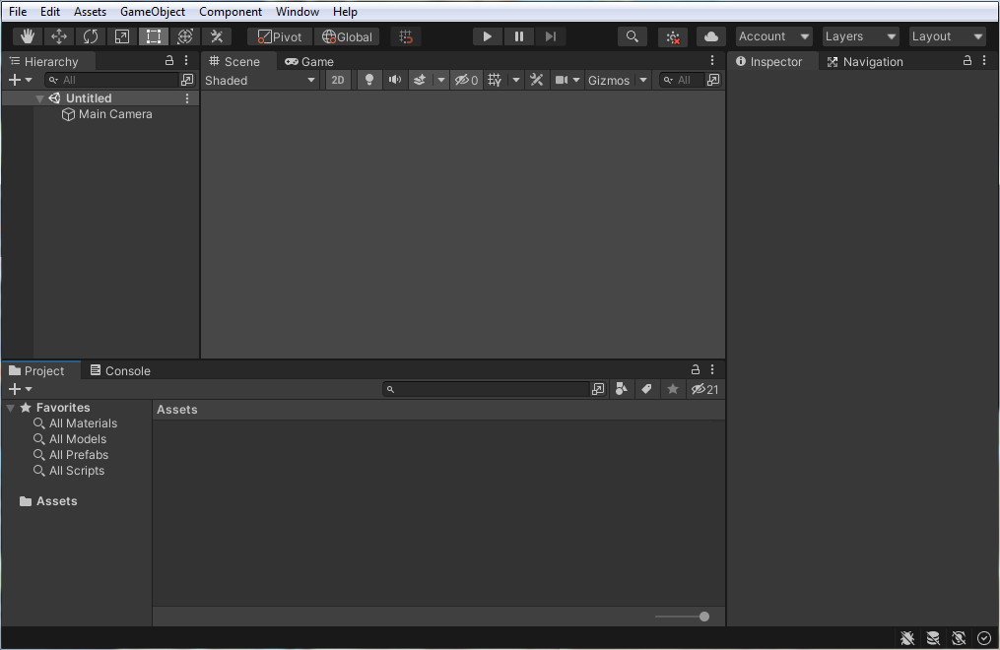
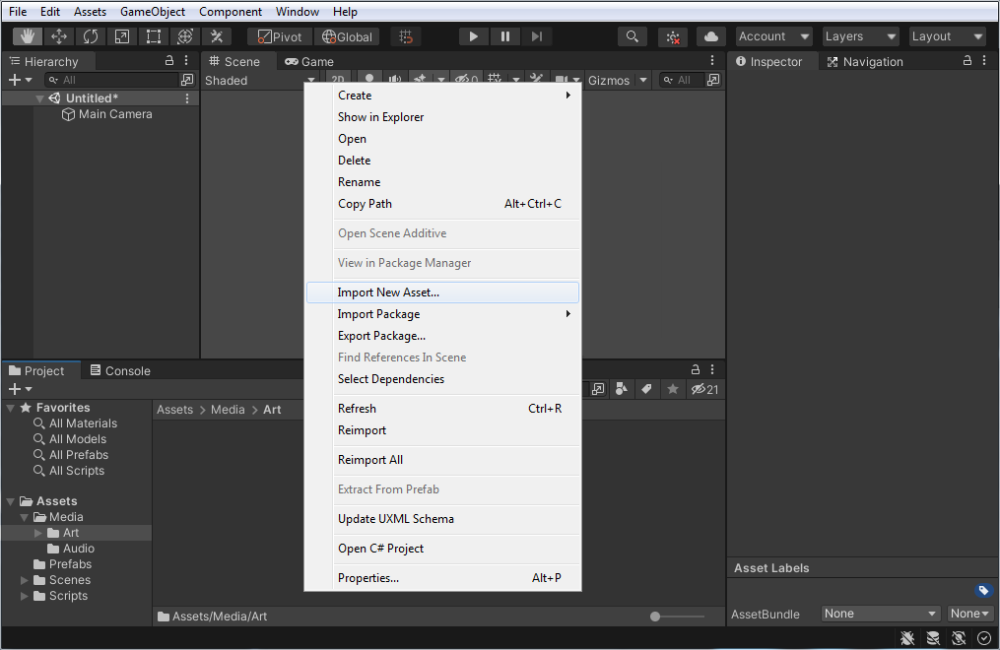
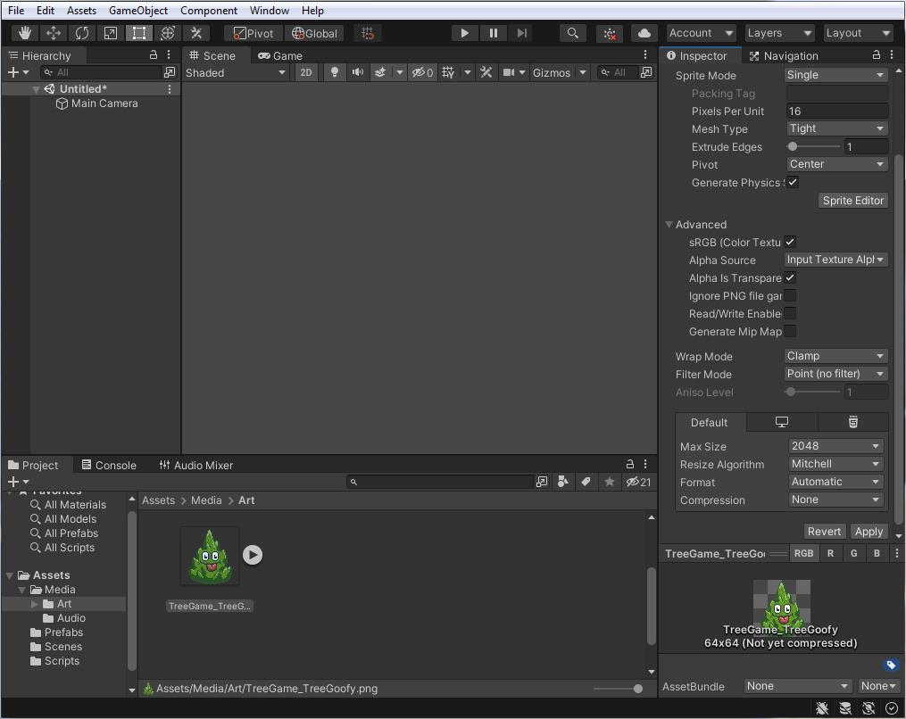
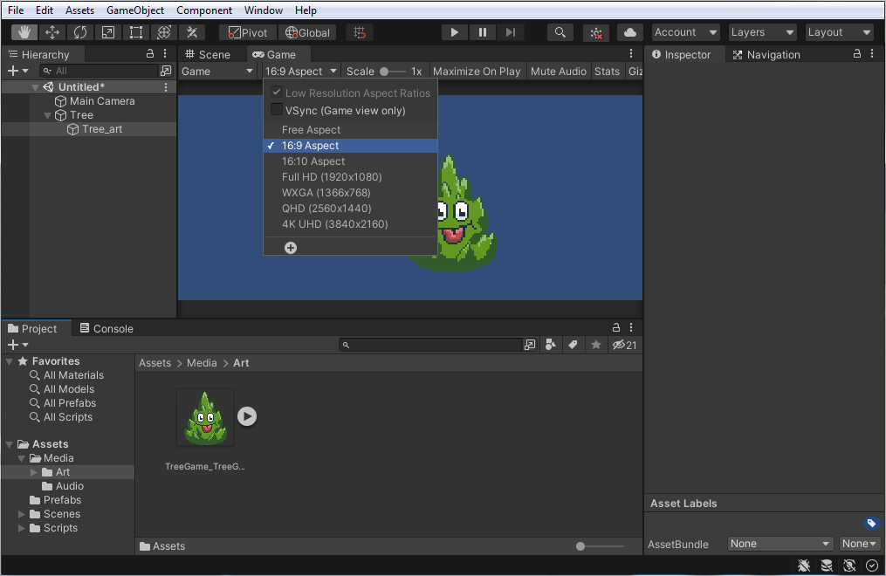

UNITY - Intro to the Main Panels
UNITY - Intro to the Main Panels
This page covers an introduction to the key Unity panel names and locations. |
|
This is a tour of the 6 key interface panels: (1) The Project, (2) the Console, (3) the Inspector, (4) the Hierarchy, (5) the Scene view, and (6) the Game view. Note that all of these panels are identified with a name tab. Look around and find each of them. Only the Top Menus do not have a name tab, but you may recognize some of them from other programs: File menu (to save a Scene or the entire Project), Edit menu, Help menu, etc.  The above layout is the default layout for Unity. All of these panels can be re-arranged by clicking on the name-tab and dragging it to a new location. If you lose a panel, or want the original arrangement, click on the "Layout" rolldown in the UpperRight corner of the interface. Then choose one of the options (the original layout is called "default"). |

(3) The Inspector is the column on the right. This is where we set parameters for any selected Project panel asset/s or Hierarchy object/s. To understand how it works, let's import an asset: 1. RightClick the empty space of the Project > Assets > Media > Art folder to choose "Import New Asset". 2. Browse your harddrive to find and select the file (in this case, a PNG image of a sassy tree).  Once the asset is in the Project panel, select it to see its default paramters in the Inspector on the right. In this case, as a piece of Pixel art, the paramters should be set to the following: Pixels Per Unit = (from 100 to) 16 Filter Mode = (from Bilinear to) Point (no filter) Compression = (from Normal Quality to) None Finally, click [Apply] (towards the bottom).  NOTE: Different Inspector settings are available for the Project panel's source asset and the Hierarchy's object copy. |
 for panning in the scene.
for panning in the scene.
{kind=link}
|
(6) The Game view is where we can see the actual apearance of our assets in the game. Find the "Free Aspect" rolldown, click it to view options, and choose 16:9 Aspect (good for a standard PC 1280x720 game) The Game view is entered automatically if we hit [Play] (top center of the interface). In Play mode we can still switch back and forth between Scene and Game views, and still select assets in the Hierarchy to change their properties in the Inspector, BUT, any changes in a Scene made during Play mode are reversed when we turn off Play (by design).  THAT'S IT! You now know enough about the interface to get started. Head over to our first tutorial on basic C# scripting in Unity to learn how to add scripts and to make your first 2D game! |
|
Tutorial by Jason Wiser, Madwomb.com. The instructional content of this page is © 2015-2022 Jason Wiser. See more Unity tutorials at http://www.Madwomb.com/Unity |